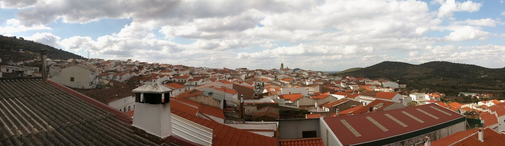
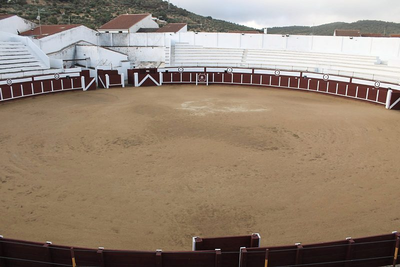
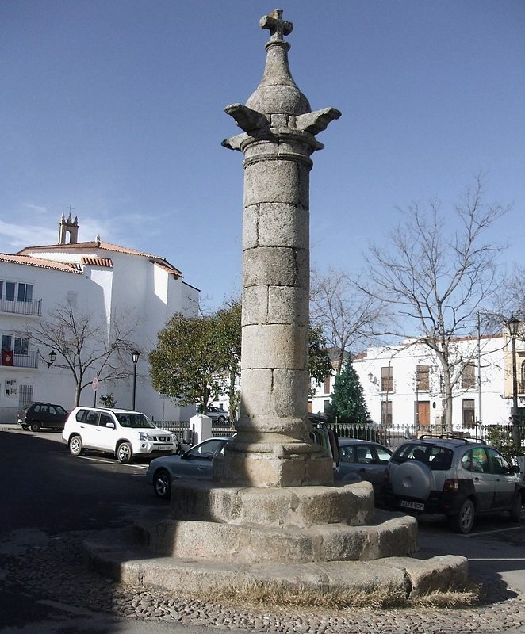
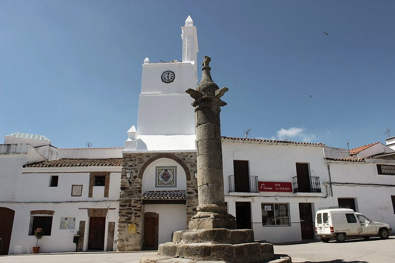
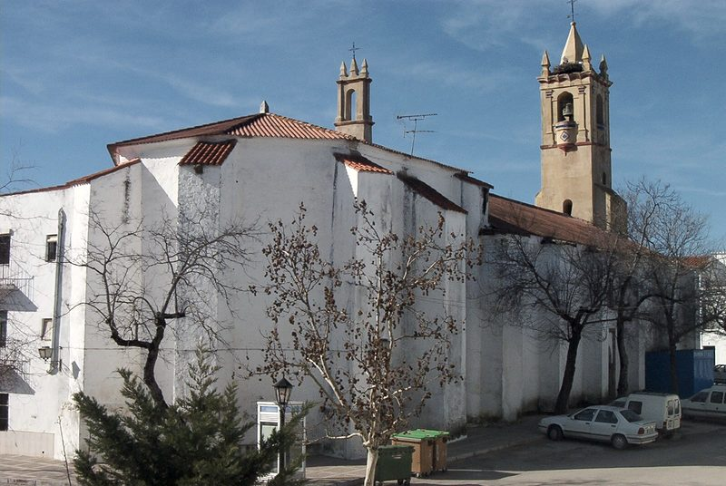
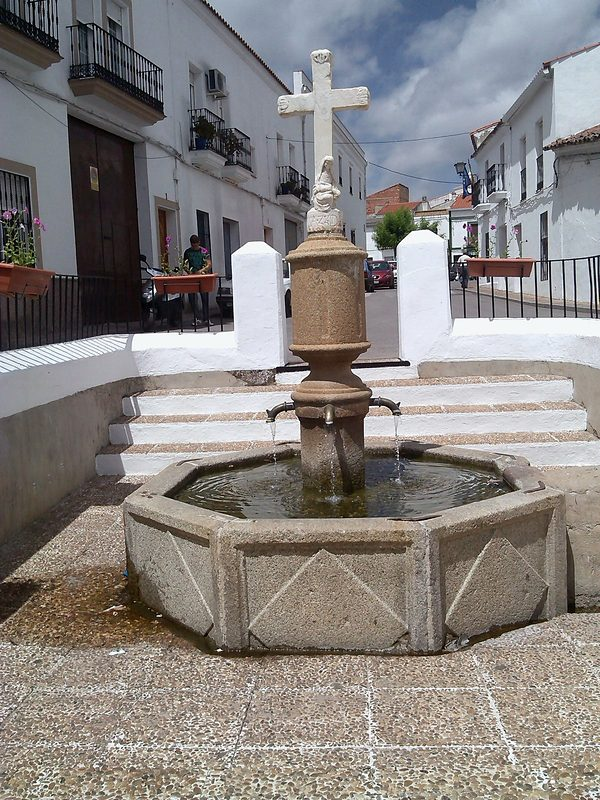
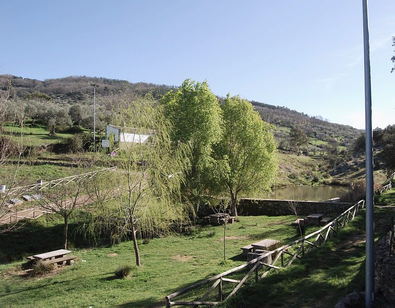
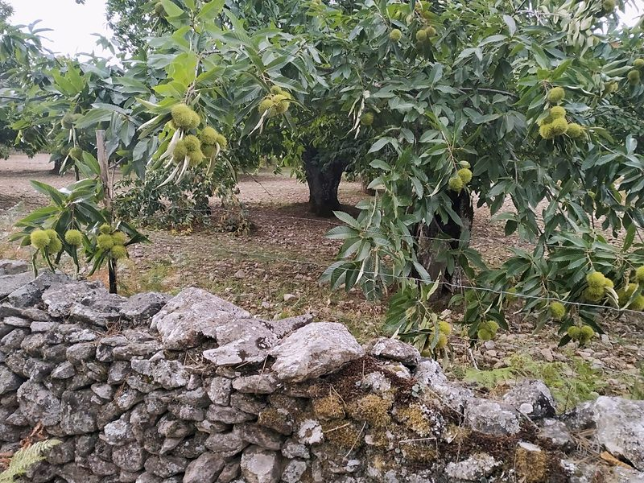
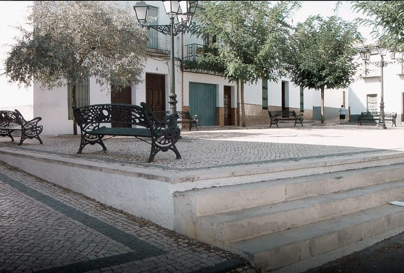
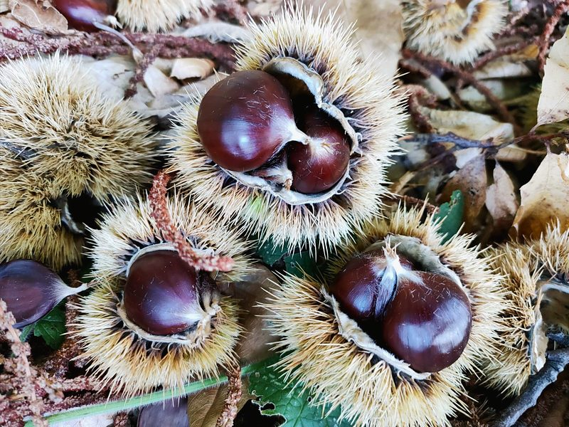

El pueblo
Un pueblo blanco de la sierra de Tentudía, uno de los «Pueblos Mágicos de España», con una plaza de toros Bien de Interés Cultural, un castañar de unas 256 hectáreas y la Feria de la Castaña cada otoño.

Qué ver
-

Plaza de Toros
Bien de Interés Cultural desde 1989. Un ruedo de 40 metros, graderío macizo y burladeros excavados en la roca; se encala cada año.
Foto: web del Ayuntamiento de Cabeza la Vaca (cabezalavaca.es)
-

Cruz del Rollo
Picota de granito levantada en 1600, símbolo de la jurisdicción que Felipe II dio a la villa en 1594. Hoy es el centro del pueblo.
Foto: Marbregal · CC BY-SA 3.0
-

Torre del Reloj y antigua cárcel
La torre es de 1770. Junto a ella está la antigua cárcel, hoy Cuerpo de Guardia de la Policía Local y, enfrente de la Cruz del Rollo, la Oficina de Turismo.
Foto: web del Ayuntamiento de Cabeza la Vaca (cabezalavaca.es)
-

Iglesia de Nuestra Señora de los Ángeles
En la Plaza de España. Se rehízo en los siglos XVII y XVIII y guarda un retablo mayor de 1760 y una «cruz de oro» de plata dorada.
Foto: web del Ayuntamiento de Cabeza la Vaca (cabezalavaca.es)
-

Fuente Abajo
A la entrada del pueblo por el este: base hexagonal de granito, cuatro caños y una cruz de mármol. Su inscripción dice 1559.
Foto: web del Ayuntamiento de Cabeza la Vaca (cabezalavaca.es)
-

La Pisá del Caballo
Parque periurbano desde 2005. Un manantial con forma de herradura, aula de la naturaleza, centro de interpretación, observatorio de aves, merendero y piscina natural.
Foto: Pepe Martinez · CC BY 2.5 es
-

El Castañar de Los Cortinales
En la sierra de Tentudía: unas 256 hectáreas de castaños, casi todas en pequeñas parcelas. La cosecha es en octubre y noviembre.
Foto: web del Ayuntamiento de Cabeza la Vaca (cabezalavaca.es)
-

Plaza Vieja
Donde se cree que nació el pueblo, alrededor de un pozo. Hoy es una plaza empedrada con calzada portuguesa.
Foto: web del Ayuntamiento de Cabeza la Vaca (cabezalavaca.es)
El término en un mapa
Lugares del mapa
Cómo leerlo
- Límite del término municipal (línea discontinua)
- El pueblo (área sombreada)
- Carreteras (línea gruesa): A-434, BA-109, EX-103, EX-201 y EX-202
- Rutas (línea de puntos): [CIMA BD02] Tentudía y Rivera de Montemayor - Monasterio de Tentudía
- Círculo con número: un lugar de la lista
- Escala: la barra de abajo mide 2,5 km
- Recuadro: el pueblo ampliado; su barra mide 250 m
- Raya fina con un punto: el sitio exacto, cuando el número se ha apartado para que se lea
Para visitar
-
Feria de la Castaña (FERCAS)
Se celebra desde 2006, el puente de Todos los Santos, para dar a conocer el castañar —el mayor de la provincia, según el Ayuntamiento— y los productos locales: stands, artesanía, cocina, música y actividades. Es Fiesta de Interés Turístico de Extremadura. La XXI edición es del 30 de octubre al 1 de noviembre de 2026, con una Pre-Feria durante todo octubre (talleres, rutas y la Ruta de la Tapa).
La cosecha del castaño es en octubre y noviembre. Para más datos, la Oficina de Turismo (924 583 002).
Origen de la Feria, en su web actual: Feria de la Castaña (FERCAS), se abre otra web
-
«Pueblo Mágico» de España
Cabeza la Vaca forma parte de la red «Pueblos Mágicos de España», un sello de una asociación sin ánimo de lucro al que se entra por invitación; su incorporación se anunció el 24 de mayo de 2023. En 2025 recibió el «Premio Pueblo Mágico Extremadura», que concede esa misma asociación por votación popular. No es una declaración oficial de la Junta.
Su ficha en Pueblos Mágicos de España: «Pueblo Mágico» de España, se abre otra web
-
Oficina de Turismo
Informa de las rutas, hace las inscripciones de actividades y da el folleto de la ruta turística con códigos QR.
- Dirección
- Plaza de España (antigua cárcel, frente a la Cruz del Rollo)
No consta el horario: pregúntelo en el Ayuntamiento.
-
Centro de Interpretación de la Pisá del Caballo
Flora y fauna de la comarca de Tentudía, con datos de lluvia de los pueblos de la comarca, y un aula de la naturaleza. Junto al observatorio de aves y la piscina natural.
No consta el horario: pregúntelo en la Oficina de Turismo.
Historia
Su origen es una villa romana del siglo II, que siguió habitada hasta fines del siglo IX. Tras la reconquista, hacia 1247, quedó en la órbita de la Orden de Santiago, y el pueblo se repobló desde 1274.
El nombre viene del monte o «cabeza» donde está el casco, que en la Edad Media se llamaba «de la vaca»; no tiene que ver con el maestre Cabeza de Vaca, que vivió después. En 1594 Felipe II le dio el título de villa y en 1600 se levantó la Cruz del Rollo, símbolo de su justicia.
En el siglo XVIII se hicieron la torre del reloj y la cárcel (1770) y empezó a levantarse la plaza de toros. El terremoto de Lisboa de 1755 dañó la torre de la iglesia y, según la tradición, hizo brotar agua en el monte de la Buitrera.
Patrimonio
Edificios y monumentos
- Plaza de TorosConstruida a finales del siglo XVIII con el trabajo de los vecinos y reedificada en 1895. Bien de Interés Cultural, con categoría de monumento, desde el 3 de mayo de 1989. Las fiestas de San Benito («los sambenitos») se viven en ella.
- Cruz del RolloDe 1600, en la Plaza de España. Tres gradas de granito, fuste cilíndrico, capitel con cuatro salientes y remate en cruz.
- Torre del Reloj y antigua cárcelTorre de mampostería y ladrillo de 1769-1772, con espadaña. La cárcel, de dos plantas, tuvo abajo la sala capitular y arriba la prisión.
- Iglesia de Nuestra Señora de los ÁngelesEn la Plaza de España. La primera construcción es del siglo XV y la torre se restauró tras el terremoto de Lisboa de 1755. La capilla del Sagrario es de 1916.
- Cruz de la calle TordoyaRecuerda a Diego María de la Tordoya. El 17 de abril de 2026 un camión la derribó por accidente y se está restaurando (el Ayuntamiento anunció el 30 de septiembre que las obras han empezado).
- Ermita de Nuestra Señora de los RemediosDesaparecida: se construyó entre 1577 y 1583 y estaba derruida hacia 1789. Con sus materiales se hizo una capilla de la iglesia.
Plazas y fuentes
- Plaza ViejaEl primer núcleo del pueblo. Allí hubo festejos taurinos hasta 1626.
- Fuente AbajoManantial muy antiguo. La fuente, con cuatro caños y una cruz de mármol renacentista, lleva la fecha de 1559.
- Fuente del RolloEn el centro de la Plaza de España, a la que los vecinos llaman «el paseo». Base circular de granito y cuatro caños.
Naturaleza
- La Pisá del CaballoParque periurbano de conservación y ocio, declarado en 2005 por la Junta de Extremadura (19.000 m²). Según la leyenda, el manantial brotó en la huella del caballo del maestre de la Orden de Santiago.
- El Castañar de Los CortinalesEn la sierra de Tentudía. Hay castaños muy viejos, un robledal y vistas a la sierra de Aracena.
- Fuente LunaraParque para familias, con zonas de picnic.
Fiestas
Enero
Sin fiestas señaladas
Febrero
- CarnavalFecha variable (en 2026, el 21 y 22 de febrero)
Marzo
- Entierro de la sardina y tirada de cántarosFecha variable (en 2026, el 1 de marzo)
Abril
- Domingo de Resurrección y quema del «Judas»Fecha variable (en 2026, el 5 de abril)
- Trail Ibérico Sierra de TentudíaAbril (en 2026, el 18 y 19)
Mayo
- Cruces de MayoPrincipios de mayo (en 2026, el 2 y 3)
- Romería de San IsidroMediados de mayo (en 2026, del 16 al 18)
Junio
Sin fiestas señaladas
Julio
- Feria de San Benito Fiesta mayorDel 9 al 12 de julio en 2026; el patrón es San Benito, el 11
- Velá de Santa Ana25 de julio
Agosto
- Feria del Libro y la ArtesaníaPrimera semana de agosto (en 2026, del 3 al 9)
- Fiestas de la Virgen de AgostoDel 14 al 16 de agosto
Septiembre
Sin fiestas señaladas
Octubre Este mes
- Ruta de la Tapa de la CastañaOctubre (en 2026, el 11 y 12)
- Feria de la Castaña (FERCAS) Fiesta mayorPuente de Todos los Santos (en 2026, del 30 de octubre al 1 de noviembre)
Noviembre
Sin fiestas señaladas
Diciembre
Sin fiestas señaladas
Gastronomía
Platos
- Guarrito frito
- Pluma a la brasa
- Carrilleras en salsa
- Jamón, lomo, salchichón y chorizo ibéricos
- Migas con sardinas o tocino
- Sopas de tomate
- Ensalá de papas
- Trincallas
- Caldereta
- Gazpacho «machacao»
Dulces
- Perrunillas
- Flores
- Gañotes con miel
- Puchas
- Castañas con leche
Para beber
- Vinos de la tierra
- Aceite de oliva

Personajes
Diego María de la Tordoya
nació h. 1470
Según el Ayuntamiento, marinero del primer viaje de Colón; quedó en el Fuerte de la Navidad, en La Española. Una calle y una cruz llevan su nombre.
Rutas
Ruta El Castañar
Por el castañar de Los Cortinales y el robledal, con subida por el arroyo de los Linos; unos 10 km. Hay folleto en PDF.
Ruta Los Cortinales
Senderismo de altura de unos 8 km, desde los «Cuatro Caminos» por el castañar hasta la cumbre de Valdezurrones.
Ruta Las Cumbres
12,5 km entre los 800 y los 1.000 m, con miradores; dificultad técnica alta y 400 m de desnivel.
Ruta La Buitrera
Eco Ruta n.º 1, de 11 km, con una subida corta al Alto de la Buitrera de 3 km.
Ruta Cicloturista Las Contiendas
Unos 30 km en bici por las sierras del término.
Ruta de las Fuentes y del Agua
Ruta urbana de 2 km, dificultad baja, por las fuentes y los pilares del pueblo.
Ruta de la Pisá del Caballo
Del pueblo al parque por una acera ancha adaptada a sillas de ruedas y una pista cementada.
Ruta del Arroyo la Vaca
Dos recorridos, de 14 y de 9 km (corta), del programa «Camina Badajoz».
Ruta Cabeza la Vaca - Puerto Lobo - Las Contiendas - Tentudía
Unos 12 km, dificultad alta, hasta el monasterio de Tentudía.
Ver la ruta: Ruta Cabeza la Vaca - Puerto Lobo - Las Contiendas - Tentudía
Ruta histórico-literaria de la Pisá del Caballo
Con folleto en PDF.
Ver la ruta: Ruta histórico-literaria de la Pisá del Caballo
Ruta turística con códigos QR
Un recorrido por el pueblo en el que cada código QR cuenta la historia del lugar. Folleto en la Oficina de Turismo.
Dónde comer y dormir
Hoteles y casas rurales
- Hotel Las Tres EncinasPlaza de España, 19 Llamar a Hotel Las Tres Encinas: 924 583 285
- Casa Rural «Camino Beturia»Camino de los Cotos, Km 4.5 · También: 686 297 440 Llamar a Casa Rural «Camino Beturia»: 924 057 925
- Casa Rural «La Fuente del Coso»C/ Coso, 3 Llamar a Casa Rural «La Fuente del Coso»: 676 451 094
Bares y restaurantes
- El FaroC/ San Benito, 3 · Restaurante Llamar a El Faro: 924 583 328
- Casa VicentePlaza Romero de Castilla, 18 · Restaurante
- El Pilar de la DehesaC/ Tienda, 1 · Bar. También: 658 803 550 Llamar a El Pilar de la Dehesa: 924 583 177
- El PensionistaC/ del Medio, 1 · Bar Llamar a El Pensionista: 924 583 049
- El ParquecilloPlaza de España, 14 · Bar Llamar a El Parquecillo: 608 817 327
- RamónPlaza de España, 7A · Bar. También: 680 280 818 Llamar a Ramón: 924 583 343
- AlejoPlaza Romero de Castilla, 13 · Bar
- La MoscaC/ del Cura, 1 · Bar Llamar a La Mosca: 679 516 094
- La PulgaC/ del Cura, 3 · Bar
- TaurinoPlaza Romero de Castilla, 1 · Café-bar Llamar a Taurino: 924 583 128
- La ParadaPlaza de España, 3 · Café-bar Llamar a La Parada: 655 242 566
- Las CuadrasC/ del Cura, 4 · Mesón Llamar a Las Cuadras: 648 261 499
- Estación de Servicio San BenitoC/ Tomillar, s/n · Cafetería
- Las 3 RAvda. Constitución, 34 · Bocatería Llamar a Las 3 R: 686 815 862
Productos típicos: embutidos, queso, aceite y pan
- Quesería «Tesoro de Cabra»Polígono Industrial, Viario 2, s/n
- Panadería-pastelería Lavado LavadoC/ Charquito, 6 Llamar a Panadería-pastelería Lavado Lavado: 924 583 317
- Panadería Manuel Macías e HijosPlaza Vieja, 2 Llamar a Panadería Manuel Macías e Hijos: 924 583 319
- Jamones y Embutidos «Los Génaros»C/ Coso, 25 · También: 924 583 141, 635 823 945 Llamar a Jamones y Embutidos «Los Génaros»: 924 583 028
- Embutidos «Mota»C/ San Benito, 8 · También: 608 433 302 Llamar a Embutidos «Mota»: 924 583 240
- Jamones y Embutidos «Moreno»C/ Alrededores, 44 Llamar a Jamones y Embutidos «Moreno»: 924 583 275
- Embutidos MateosC/ San Benito, 10
- TentuolivaC/ Fontanilla, 14 Llamar a Tentuoliva: 924 583 102
Tiendas de alimentación
- Supermercado Don MarketC/ Bastimento, 13 · También: 680 467 483 Llamar a Supermercado Don Market: 620 309 274
- Cárnicas Peña AltaAvda. Constitución, 36 Llamar a Cárnicas Peña Alta: 924 583 170
- Pescados y Mariscos IbarraPlaza Vieja, 10 Llamar a Pescados y Mariscos Ibarra: 699 715 669
- Confitería y panadería HidalgoC/ del Medio, 18 Llamar a Confitería y panadería Hidalgo: 924 583 115
- Comercio Mari PepiC/ Cruces, 7 Llamar a Comercio Mari Pepi: 645 851 629
- Ultramarinos «Mari Mateos»Plaza de España, 1
- Supermercado «Los Genaros»Plaza Vieja, 1 Llamar a Supermercado «Los Genaros»: 660 010 317
- Supermercado «Pepín»C/ del Cura, 24 Llamar a Supermercado «Pepín»: 924 583 112
- Hnos. Reviriego MatitoC/ Bastimento, 10 · También: 615 948 135 Llamar a Hnos. Reviriego Matito: 653 880 733
- Frutas VázquezAvda. Constitución, 95 Llamar a Frutas Vázquez: 667 469 547
Datos de la «Guía de empresas y servicios» de la web municipal (cabezalavaca.es), sin fecha; consultados el 5 de octubre de 2026. Se han quitado los nombres de personas y los teléfonos repetidos entre negocios distintos. Son negocios privados: el Ayuntamiento no responde de sus datos.
Créditos de las fotos
- Torre del Reloj y Cruz del Rollo: web del Ayuntamiento de Cabeza la Vaca (cabezalavaca.es). Solo para la propuesta: hace falta autorización del Ayuntamiento para publicarla (su aviso legal prohíbe reproducir sus imágenes).
- Cruz del Rollo: Marbregal, CC BY-SA 3.0 (ficha de la foto)
- Torre de la iglesia de Nuestra Señora de los Ángeles: Elías Zamora, CC BY 2.5 es (ficha de la foto)
- El castañar, con el muro de piedra: web del Ayuntamiento de Cabeza la Vaca (cabezalavaca.es). Solo para la propuesta: hace falta autorización del Ayuntamiento para publicarla (su aviso legal prohíbe reproducir sus imágenes).
- Plaza de Toros: web del Ayuntamiento de Cabeza la Vaca (cabezalavaca.es). Solo para la propuesta: hace falta autorización del Ayuntamiento para publicarla (su aviso legal prohíbe reproducir sus imágenes).
- Iglesia de Nuestra Señora de los Ángeles: web del Ayuntamiento de Cabeza la Vaca (cabezalavaca.es). Solo para la propuesta: hace falta autorización del Ayuntamiento para publicarla (su aviso legal prohíbe reproducir sus imágenes).
- Fuente Abajo: web del Ayuntamiento de Cabeza la Vaca (cabezalavaca.es). Solo para la propuesta: hace falta autorización del Ayuntamiento para publicarla (su aviso legal prohíbe reproducir sus imágenes).
- La Pisá del Caballo: Pepe Martinez, CC BY 2.5 es (ficha de la foto)
- Plaza Vieja: web del Ayuntamiento de Cabeza la Vaca (cabezalavaca.es). Solo para la propuesta: hace falta autorización del Ayuntamiento para publicarla (su aviso legal prohíbe reproducir sus imágenes).
- Castañas en su erizo, sobre hojas secas: web del Ayuntamiento de Cabeza la Vaca (cabezalavaca.es). Solo para la propuesta: hace falta autorización del Ayuntamiento para publicarla (su aviso legal prohíbe reproducir sus imágenes).
- Panorámica de los tejados del pueblo: Pedro Coronado Vázquez, CC BY-SA 3.0 (ficha de la foto)